地政学
ハワイは北米とアジア太平洋の間に浮かぶ米国州であり、ホノルルは州都、港湾、空港、軍事、外交的接続を担います。島嶼の距離は防衛と補給の要であり、食料、燃料、住宅、観光依存の脆さも浮かび上がらせます。

🇺🇸 アメリカ合衆国 / 太平洋 / World City Atlas
ホノルルを中心に、島嶼地理、先住ハワイアンの歴史、州都機能、観光経済、米軍基地、アジア太平洋移民、住宅費、海洋気候が重なる太平洋の都市圏です。
都市の骨格
ハワイはリゾートの風景だけでは読めません。ホノルルの港、空港、州政府、大学、病院、軍事施設、観光地区、山側の住宅地が、島という制約の中で密接に結びついています。
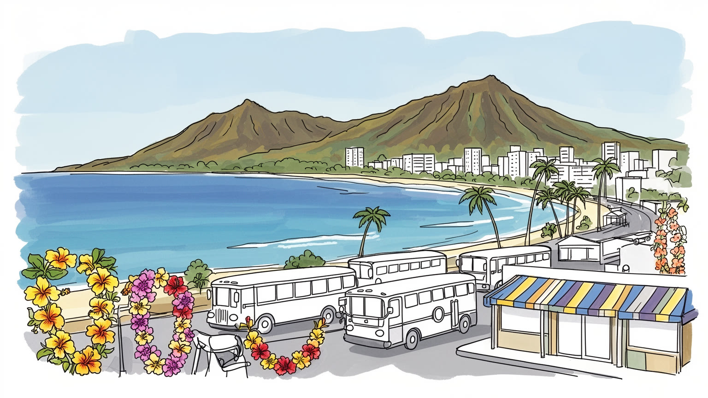
ハワイは北米とアジア太平洋の間に浮かぶ米国州であり、ホノルルは州都、港湾、空港、軍事、外交的接続を担います。島嶼の距離は防衛と補給の要であり、食料、燃料、住宅、観光依存の脆さも浮かび上がらせます。
観光、軍事、州政府、医療、教育、港湾、建設、小売が雇用を支えます。ホテル、清掃、飲食、送迎、介護、港湾作業は不可欠ですが、高い住宅費と物価が働く人の生活を圧迫し、学生や高齢者の家計にも強く響きます。
先住ハワイアンの信仰と王国史、キリスト教会、仏教寺院、神社、移民の祭礼、フラ、音楽、家族行事、Merrie Monarchや盆踊りも重なります。観光用の南国像だけでなく、土地と祖先への敬意が都市文化の層を作り、言語も復興しています。
旅行者はワイキキ、サーフィン、火山、海岸、食、王国史を楽しみます。住民には家賃、通勤、物価、海面上昇、渋滞、観光混雑、子どもや高齢者の移動、市場や病院への足、夜の帰宅、買い物と通学の負担が切実です。
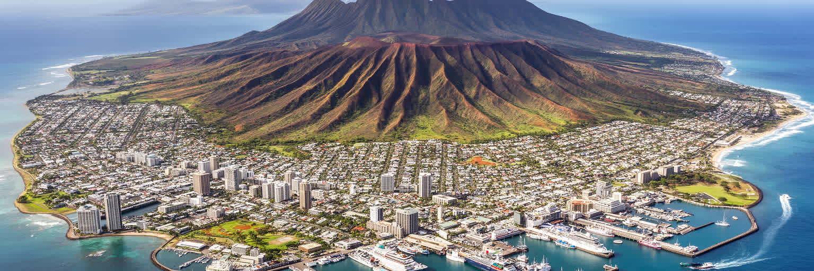
ハワイを読む第一の入口は、都市が大陸の平野ではなく、太平洋の火山島に置かれていることです。ホノルルはオアフ島南岸の狭い海岸平野に広がり、背後にはコオラウ山脈、前面には港、空港、珊瑚礁、ワイキキの海岸があります。山と海の近さは美しい景観を作りますが、住宅、道路、学校、病院、軍事施設、観光地区を置ける土地を厳しく限ります。島の外から入る食料、燃料、建材、観光客、軍需物資は港と空港に集中し、物流の遅れや災害は生活にすぐ響きます。風上と風下、雨の多い谷と乾いた海岸、波の強い北岸と都市化した南岸では、同じ島でも生活条件が違います。島であることは隔絶ではなく、海路と空路で世界へ開かれる条件でもありますが、同時に逃げ場の少なさを意味します。ハワイの都市形態は、自然の豊かさを背景にしたリゾートではなく、限られた土地を行政、軍事、観光、住民生活が分け合う緊張の地図です。海岸線の変化や山側の開発を見れば、楽園像の内側にある土地の希少性が見えてきます。都市を理解するには、浜辺だけでなく谷、尾根、港、滑走路、郊外道路を一つの島の装置として読む必要があります。さらに、島ごとの距離は行政サービスや医療搬送、大学進学、家族訪問の時間を変えます。地図上の近さより、航空便の本数、港の天候、道路の混雑が生活の実感を決めます。島の地理は毎日の時間割でもあります。
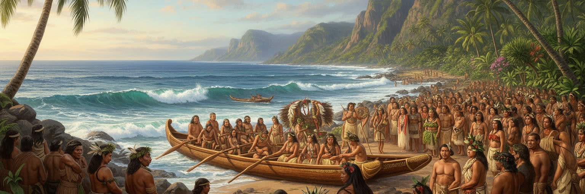
ハワイの都市を語る時、先住ハワイアンの歴史は観光の前置きではなく中心に置くべきです。ポリネシアの航海者が星、風、波を読んで島々へ到達し、土地、水、海、祭祀、親族を結ぶ社会を築いたことが、現在の地名や儀礼、言語復興の基礎にあります。カメハメハ大王による統一、王国の成立、宣教師と商人の到来、砂糖産業、土地制度の変化、米国勢力の拡大、王政転覆、併合は、ホノルルの宮殿や教会、官庁街だけでなく、土地所有と教育、言語、文化表現に深い影を残しました。イオラニ宮殿は美しい建築であると同時に、主権を奪われた記憶の場所でもあります。フラ、ハワイ語、カヌー航海、土地保護運動は、過去を飾る民俗ではなく、現在の政治と生活の実践として続いています。観光が先住文化を分かりやすい商品へ変えるほど、その背後の痛みや権利は見えにくくなります。ハワイを読むには、歓迎の言葉や音楽だけでなく、誰の土地で、誰の歴史が語られ、誰が都市の中心から押し出されたのかを問う必要があります。先住ハワイアン史は、島の現在を正確に見るための羅針盤です。学校、博物館、地域行事、土地利用の公聴会で何が語られるかは、歴史が現在の制度へどう戻るかを示します。記憶は過去の展示ではなく、都市の権利をめぐる日常の争点です。だから地名の発音や儀礼の扱いも、細部に見えて大切な公共性になります。
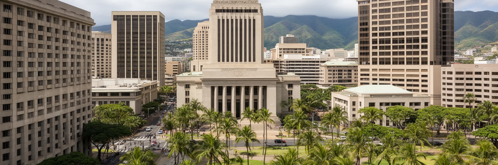
ホノルルは単なる観光地ではなく、ハワイ州の政治、行政、教育、医療、報道、司法、金融が集まる州都です。州議事堂、裁判所、イオラニ宮殿、官庁、大学、主要病院、新聞社、テレビ局、銀行、港湾、空港が近い距離に置かれ、島々を束ねる制度の中心として機能します。離島の住民にとって、ホノルルは専門医療、大学教育、行政手続き、裁判、商取引のために向かう都市でもあります。そのため、オアフ島の人口集中は便利さであると同時に、他島との格差を生みます。州政府は観光、住宅、環境、先住民の権利、軍事、災害対応、教育、移民コミュニティの支援を調整しなければなりません。ダウンタウンの官庁街とワイキキのホテル地区は近いが、都市の意味は大きく異なります。公務員、看護師、教師、学生、港湾労働者、ホテル従業員、ローカルメディアが同じ道路を使い、渋滞と家賃の中で生活します。ホノルルを州都として読むには、ビーチの風景だけでなく、予算審議、土地利用、離島航空、病院の待合室、大学の寮、港の物流を同じ地図に置く必要があります。島々を結ぶ政治の中心であるほど、都市は観光客だけでなく住民の公共サービスを優先できるかを問われます。選挙や公聴会で扱われる議題は、海岸の保全から学校給食まで幅広いです。州都の小さな距離感は、政策の結果を住民がすぐ感じる近さでもあります。行政の判断は、島の暮らしへ直に戻ります。
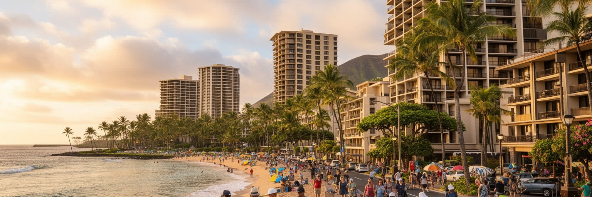
ハワイ経済の表面に最も見えやすいのは観光です。ワイキキのホテル、Ala MoanaやKakaakoの買い物、レストラン、ビーチ、ツアーバス、レンタカー、空港、クルーズ、結婚式、ゴルフ、サーフィン、アウトリガーカヌー、海洋アクティビティは、巨大なサービス産業として島を動かします。観光は州税収と雇用を生み、音楽、食、自然、歴史を世界へ知らせる一方、経済を外部需要に強く依存させます。感染症、航空燃料価格、為替、自然災害、国際政治の変化は、予約数と働く時間にすぐ影響します。ホテルの客室清掃、調理、警備、送迎、施設管理、土産物店、ツアーガイド、ビーチの安全管理、夜の演奏は、訪問者が感じる快適さを支えますが、賃金と住宅費の釣り合いは厳しいです。観光が増えれば海岸の混雑、交通渋滞、水使用、廃棄物、短期滞在住宅、文化の商品化も増えます。ハワイを観光都市として読むには、旅行者の満足だけでなく、住民が海へ近づけるか、労働者が職場の近くに住めるか、先住文化が消費の飾りにされていないかを見る必要があります。観光は島の大切な収入源ですが、島全体を商品にしすぎると、暮らしと土地の尊厳を削ります。これからのハワイ観光は、量だけでなく、地域への還元と自然文化の保護で評価されるべきです。宿泊税、入域管理、公共交通、ビーチ清掃への投資は、観光収入を住民の生活環境へ戻す具体的な回路になります。旅行者の行動も島の負担を左右します。
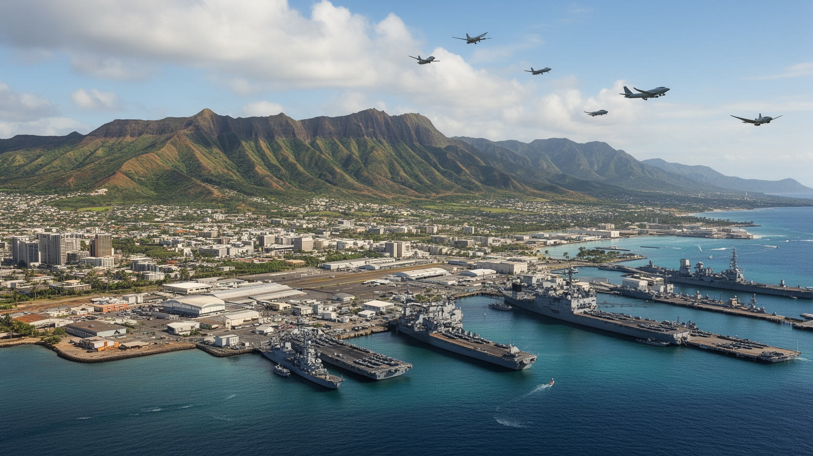
ハワイは米国の太平洋戦略で極めて重要な位置にあります。真珠湾、ヒッカム、スコフィールド、カネオヘなどの軍事施設は、海軍、空軍、陸軍、海兵隊の活動、補給、訓練、司令機能を支え、アジア太平洋と北米を結ぶ安全保障の中間点となります。真珠湾攻撃の記憶は米国史の大きな節目として観光地にもなっていますが、軍事の存在は追悼だけでは終わりません。基地は雇用、契約、住宅需要、小売、医療、学校へ影響し、州経済の一部を成します。一方で、土地利用、騒音、環境汚染、燃料貯蔵、先住ハワイアンの聖地や自然環境への影響は長く議論されてきました。軍人家族は島の住民でもあり、転勤の多い生活、学校、医療、住宅を通じて地域と関わります。ハワイを軍事都市として読むには、基地を遠いフェンスの内側にあるものと見なさず、港湾、道路、住宅市場、雇用、環境リスク、歴史教育とつなげて見る必要があります。太平洋の平和と緊張は、ホノルルの空港や海岸から遠い外交問題ではなく、島の土地に刻まれた現実です。観光の楽園像と安全保障の要衝という二つの顔が同じ島にあることが、ハワイの重みを作っています。基地の存在は災害時の輸送力にもなりますが、同時に平時の土地配分を固定する力でもあります。安全保障を語るほど、住民の健康と環境への説明責任も重くなります。演習の音、通勤車列、軍人家族の学校行事も、日常の中で軍事を感じさせます。
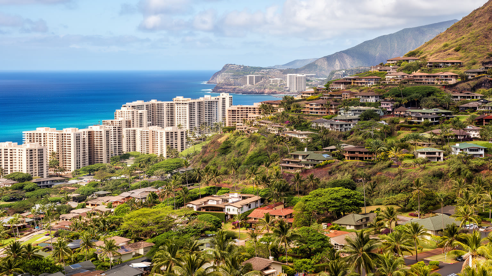
ハワイで暮らす難しさは、住宅費と物価に最もはっきり表れます。限られた土地、建設費、輸送費、投資需要、短期滞在住宅、軍人や高所得移住者の需要、観光地の地価が重なり、ホノルルの家賃と住宅価格は多くの住民に重いです。海岸に近い便利な地区は高く、より手頃な住まいを求める人は島の西側や内陸へ移り、通勤時間と交通費が増えます。多世代同居は家族の支えである一方、過密な住まいにもなりやすいです。先住ハワイアンや長く住むローカルの家族が本土へ移る現象は、単なる人口移動ではなく、土地、墓、親族、文化の継承に関わる痛みです。ホームレス問題も住宅不足、賃金、医療、依存症、家族関係、災害、制度支援の不足が重なっています。ハワイを生活都市として読むには、高級ホテルや眺望のよいコンドミニアムだけでなく、教師、看護師、ホテル従業員、介護職、若い家族、学生、子育て世帯がどこに住むのかを見る必要があります。島の経済を支える人が島に住めなければ、共同体は内側から弱ります。住宅政策は建物供給だけでなく、土地の権利、交通、賃金、短期賃貸規制、先住民の土地回復と結びつけて考えなければなりません。学校の先生や救急隊員が職場の近くに住めない時、公共サービスそのものが弱くなります。住まいは個人の市場選択ではなく、島の共同体を保つ基盤です。家を失うことは、島との関係を失うことにもつながります。
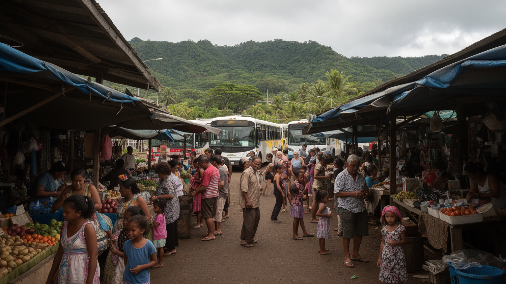
ハワイの社会は、先住ハワイアンの土地に、アジア太平洋の移民の歴史が重なって形づくられました。砂糖やパイナップル農園には中国、日本、沖縄、フィリピン、ポルトガル、韓国、プエルトリコなどから労働者が来て、過酷な労働条件の中で家族、言語、宗教、食、互助組織を育てました。その後もサモア、トンガ、ミクロネシア、ベトナム、タイ、ラオス、その他の地域からの移動が続き、ホノルルの学校、教会、寺院、商店街、祭り、食堂、ラジオに多層の文化を残しています。ハワイのローカル文化は単純な多文化の飾りではなく、農園労働、差別、軍事、観光、家族の努力の中から生まれた生活の知恵です。ピジン英語、盆踊り、旧正月、フィリピン系の祭礼、King Kamehameha Day、サモア系教会、沖縄系の会館は、都市の日常を支えます。移民の歴史は成功物語だけではありません。低賃金労働、在留資格、教育格差、医療、住宅費、島外移住の問題もあります。ハワイを読むには、民族の多様さを表面的に祝うだけでなく、それぞれの集団がどの産業で働き、どの地区に住み、どのように先住ハワイアンの土地の歴史と向き合うのかを見る必要があります。島の多文化性は、記憶と責任を伴う日常の実践です。混血や多言語の経験は家族の誇りであると同時に、制度上の分類では見えにくいです。学校の行事、葬儀、食卓、地域会館、ローカル紙に、その複雑さが残ります。移民の記憶は、島の公共文化を支える柱でもあります。
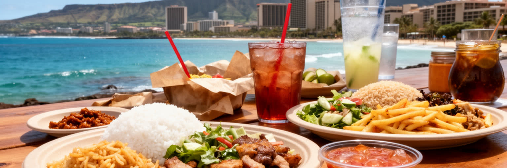
ハワイの食文化は、観光客向けの南国料理だけでは説明できません。ポケ、プレートランチ、ロコモコ、ファーマーズマーケット、サイミン、スパムむすび、マラサダ、シェイブアイス、カルアピッグ、ラウラウ、タロイモ、フィリピン料理、日系の弁当、韓国系の焼肉、中国系の麺、サモアやトンガの食卓が、島の日常を作ります。多くの料理は農園労働者の昼食、家族の持ち寄り、移民の保存食、港、Chinatown、KCC市場の魚、軍や本土から来た加工食品が混ざって生まれました。食はハワイの多文化性を分かりやすく見せるが、同時に所得差と土地の問題も映します。新鮮な地元食材を使う高級店が増える一方、輸入食品に頼る島の物価は高く、食料不安を抱える世帯もあります。観光が人気料理を商品化すると、地元の食堂や市場の価格、家賃、行列が変わります。ハワイを食から読むには、名物を味わうだけでなく、漁師、農家、厨房、学校給食、フードバンク、家族の集まり、UHの試合帰り、宗教行事を同じ流れに置く必要があります。食卓は、先住文化、移民労働、軍事、観光、輸送コスト、健康問題が交差する場所です。気軽な一皿の中に、島の歴史と現在の生活費が詰まっています。地元の食を守ることは、料理名を保存するだけでなく、作る人と食べる人が島で暮らし続けられる条件を守ることでもあります。市場で買える魚や野菜の量、学校で出る昼食の質、家族の集まりや夜市に持ち寄れる料理は、島の自給力と共同体の健康を映しています。
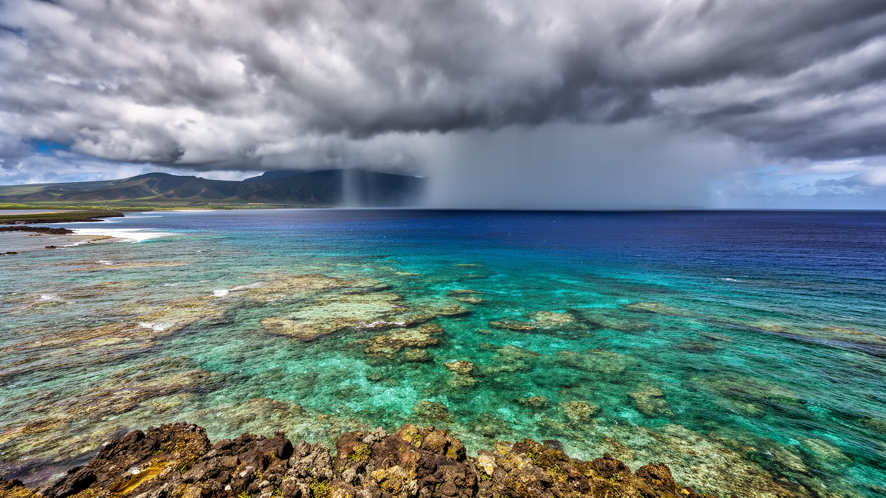
ハワイの気候は、貿易風、海流、火山地形、標高差によって作られます。ホノルルの海岸では温暖で乾いた日が多く、山側では雨が増え、島ごとに微気候が大きく変わります。観光客には穏やかな南国の印象が強い一方、都市は気候リスクの最前線にもあります。海面上昇はワイキキの砂浜、低地の道路、排水、ホテル、住宅、文化遺産に影響し、強い波や高潮は海岸線を削ります。珊瑚礁の白化は生態系だけでなく、漁業、観光、波の防御機能を弱めます。豪雨は谷と都市低地に洪水を起こし、干ばつは農業と水資源を圧迫します。山火事のリスクも、外来草地、乾燥、土地管理、避難路の不足と結びついて深刻化しています。ハワイを気候の視点で読むには、青い海を背景にした快適さだけでなく、護岸、排水溝、避難計画、珊瑚礁保護、淡水の管理、脆い送電網を見る必要があります。島は気候変動から逃げにくいです。都市の適応は、観光資産を守ることだけではなく、低所得地区、先住ハワイアンの土地、離島の集落、高齢者、車を持たない人が安全に暮らせる条件を整えることでもあります。海の美しさを守ることは、生活の安全を守ることと同じ課題です。涼しい風を受ける住宅と、暑い道路沿いの集合住宅では負担が違います。気候政策は海岸の景観保全だけでなく、避難できる道、日陰、水、通信を公平に整える仕事になります。日々の備えが島の回復力を決めます。
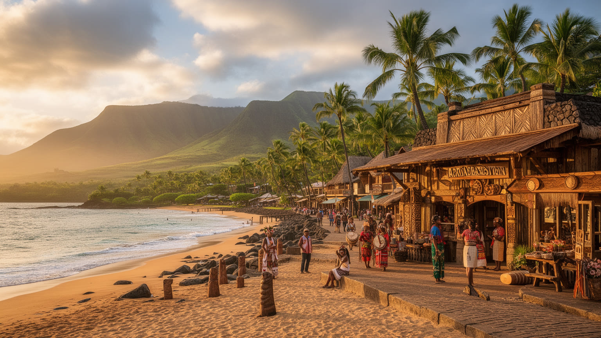
ハワイの観光遺産は、ワイキキの海岸だけではありません。イオラニ宮殿、ビショップ博物館、真珠湾、ダイヤモンドヘッド、火山国立公園、ヘイアウ、プランテーション時代の町、移民の寺社、フラの舞台、海辺の墓地は、それぞれ異なる記憶を持ちます。訪問者は短い滞在で美しい景色を求めますが、これらの場所は王国の主権、戦争、先住文化、農園労働、移民家族、自然信仰、環境変化を語っています。遺産観光は学びの入口になり得る一方、説明が浅いと複雑な歴史を楽しい演出へ縮めてしまいます。フラやレイ、アロハの言葉は歓迎の象徴として広まりましたが、土地と祖先への敬意を抜きに消費されると意味が薄れます。真珠湾は米国の戦争記憶として強く語られますが、同じ島には王政転覆や先住民の権利の記憶もあります。ハワイを遺産観光から読むには、写真を撮る場所だけでなく、誰が解説し、どの言語で語られ、入場料がどこへ戻り、地元住民がその場所をどう使うのかを見る必要があります。観光が歴史を尊重するなら、訪問者は島を背景として消費するのではなく、重なり合う記憶を持つ社会として向き合うことができます。遺産は過去の展示ではなく、現在の土地利用と教育を変える力を持ちます。ガイドの言葉、博物館の展示順、立ち入り制限、儀礼への配慮は、訪問者が何を学ぶかを左右します。丁寧な観光は、場所を消費する速度を少し遅くします。
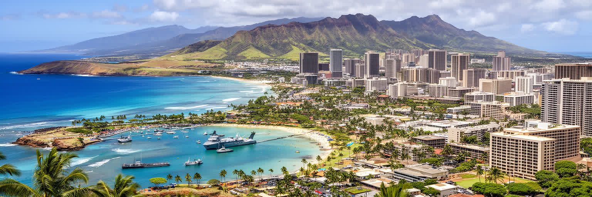
ハワイを読むことは、楽園という一枚の絵をほどき、島嶼都市の複雑な仕組みを見ることです。ホノルルには州都、港、空港、大学、病院、軍事施設、観光地、住宅地が集中し、オアフ島だけでなく周辺島の生活にも影響します。先住ハワイアンの土地と王国史、アジア太平洋移民の労働、米軍の太平洋戦略、観光経済、海洋気候、住宅費は、別々の話ではありません。どれも土地の希少性と海に囲まれた条件へ戻ってきます。訪問者が感じる開放感は、ホテル労働、UHスポーツ、ホノルルマラソン、輸入物流、清掃、港湾、警備、文化解説、自然保護によって支えられます。住民は美しい海と山に囲まれながら、家賃、物価、渋滞、災害、観光混雑、島外移住の不安を抱えます。ハワイの価値は、消費される風景の美しさだけでなく、土地への敬意、多文化の日常、自然の限界、公共サービスの維持を同時に考えられる点にあります。現代の島嶼都市としてのハワイは、気候変動、観光依存、軍事、先住民の権利、住宅危機を世界に先んじて見せています。海は都市を隔てる壁ではなく、歴史と人を運ぶ道であり、同時にリスクを運ぶ面でもあります。その両義性を読む時、ハワイは単なる休暇地ではなく、太平洋の未来を考える重要な都市圏として見えてきます。島外から来る人が何を見て、何を見落とすかは、都市の未来にも影響します。ハワイを尊重して読む姿勢は、土地、海、人の関係を急いで消費しないことから始まります。